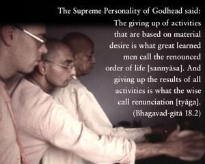

The Supreme Personality of Godhead said: The giving up of activities that are based on material desire is what great learned men call the renounced order of life [sannyāsa]. And giving up the results of all activities is what the wise call renunciation [tyāga].

The performance of activities for results has to be given up. This is the instruction of Bhagavad-gītā. But activities leading to advanced spiritual knowledge are not to be given up. This will be made clear in the next verses. In the Vedic literature there are many prescriptions of methods for performing sacrifice for some particular purpose. There are certain sacrifices to perform to attain a good son or to attain elevation to the higher planets, but sacrifices prompted by desires should be stopped. However, sacrifice for the purification of one’s heart or for advancement in the spiritual science should not be given up.